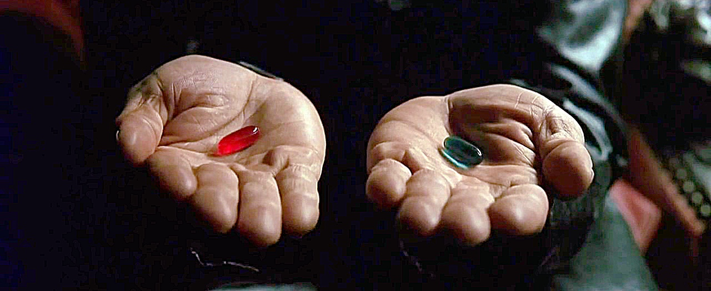

Project 1: Re-membering the Unseen - Santa Cruz Shadows and the Ghosts of Settler Colonialism
So you want to know the truth.
What truth would you like to know about?
Click the links below to read true stories that have happened at the location you are standing on.
AULINTA (Santa Cruz Before Colonization)
Often the dark histories of cities are forgotten and covered up through time. However, the pain and historical trauma of the people who have suffered throughout generations is still present. To decolonize the places we are in we must learn the true stories and reteach history the right way. By being complicit with false myths you are actively engaging in the process of colonization, learning about narratives from the perspective of the oppressed aids all of us in reshaping our views and allows us to heal and help heal those around us.
Write me a complaint?
Here's my email: idontcarewhatuneed2say@gmail.com
No really, email me.
Do you choose to do your part in society by relearning historic truths and unlearning colonial myths?
